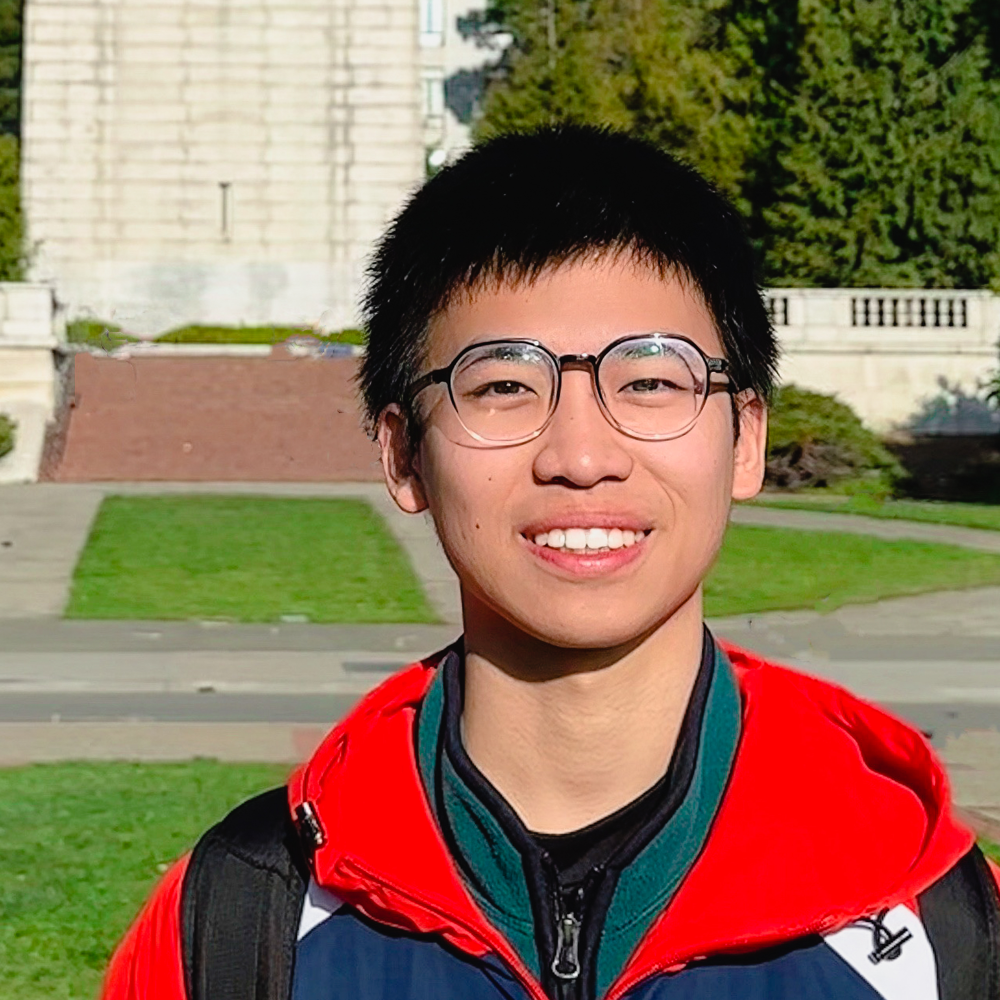

|
Mingqian Liao
|

|
Senior Undergraduate Student @Turing Class, SUSTech
Research Assistant @Johns Hopkins University
Address: 500W University Pkwy, Baltimore, MD 21210
Github: Leo-Adventure
Phone: (+1)510-365-1902
E-mail: liaomq328@gmail.com
CV: CV
|
About me
My name is Mingqian Liao, I'm a senior undergraduate at the Southern University of Science and Technology (SUSTech), majoring in Computer Science
and Technology, and studying in the Turing class of my major. I am currently a undergraduate research assistant at the Johns Hopkins University, under the guidance of Prof. Vishal M. Patel. I am looking for a phd position in computer vision after getting my bachelor degree in 2024. My goal is to apply my deep learning skills and knowledge to contribute to cutting-edge
research in the field.
I love coding and I have a strong interest in computer vision and deep learning, and I am currently working on NeRF project in the VIU lab in JHU. And I have been working in our iMED lab in SUSTech for two year to study the application of deep learning and computer vision to medical imaging processing.
I am eager to delve into the field of computer vision, aiming to uncover the underlying algorithms that drive our visual perception and recognition. As a student focused on computer vision, I hope to provide fresh insights into the advancements of image recognition and artificial intelligence technologies.
Outside of my academic interests, I enjoy photographing, travelling and cooking.
Education
Research Assistant, Johns Hopkins University,
08.2023 - 02.2024
Visiting Student, University of California, Berkeley,
01.2023 - 06.2023
-
Main Subject: Deep Learning & Computer Vision
-
Main Courses: Machine Learning(CS189), Deep Learning(CS182), Graduate Computer Vision(CS280), Operating
System(CS162)
Senior Undergraduate, Southern University of Science and
Technology,
09.2020 - 06.2024
-
Major: Computer Science
-
Supervisor: Dr. Jiang Liu & Dr. Shiqi Yu
-
Overall GPA: 3.74/4(90.41)
Sophomore GPA: 3.83/4
Junior GPA: 3.94/4
-
2022 Outstanding Student Scholarships (Second Prize)
2022 ASC Student Supercompute Challenge (First Prize)
Competitions and awards
-
the Meritorious Winner of Mathematical Contest in Modeling, COMAP, 5.2023
-
Distinguished Student Assistant in CS305 Computer Network, Southern University of Science and Technology,
01.2023
-
"Intelligent Pedestal" Industry-Education Integration Collaborative Education Project Scholarship
for Excellent Performance of Machine Learning Class, 12.2022
-
"Intelligent Pedestal" Industry-Education Integration Collaborative Education Project Scholarship
for Excellent Performance of C/C++ Program Design Class, 12.2022
-
The First Prize in 2022 ASC Student Supercompute Challenge 2022, Asia Supercomputer Community, 12.2022
-
The Second Place in 2022 APAC HPC-AI Competition, HPC-AI Advisory Council, National Supercomputing Centre
(NSCC) Singapore, and National Computational Infrastructure (NCI) Australia, 11.2022
-
Special Prize in The 9th "League Cup" Undergraduate English Writing Contest, Guangdong Province, 9.2022
-
The Second prize of SUSTech Excellent Student Scholarship, Southern University of Science and Technology,
9.2022
-
The Special Prize of SUSTech Freshman Scholarship, Southern University of Science and Technology, 10.2020
Projects
-
Unsupervised Fundus Surgical Depth Estimation Based on Microscopic Surgical Videos,
01.2022 - 06.2023
-
Build a virtual surgical instrument and fundus database
-
Conduct a series of experiments and optimizations to migrate the model in the self-driving depth
prediction scene into the surgical scene
-
Try to design a model to output the corresponding depth video from the input fundus surgery video
-
Digging deeper into the value of Wordle through time series analysis and natural language processing,
2.2023
-
Build time series models to explain changes in the number of active Wordle players and predict future
trends
-
Establish a probabilistic regression model of the distribution of guessing times to analyze the
difficulty of Wordle games
-
Use clustering algorithms to grade the difficulty of the game, and combine natural language processing
techniques to build a classification model from the puzzle to infer the difficulty rating of the game
-
Deep-Learning-Based DNA Fast Decoding, 03.2022-11.2022
-
Design a model to predict transcription factor's binding site based on the input DNA sequence and
DNase-sequence
-
Improve the model using the key part of UNet and Leopard
-
Use horovod to train the network distributedly
-
Neural Network for self-driving data augmentation, 11.2022 - 01.2023
-
Augment the automated driving dataset using the Stable Diffusion model as well as the Textual Inversion
model
-
Conduct experiments on the prompt to guide the direction of augmentation, and on the sampling method to
augment
-
Intelligent identification of ancient glass objects given statistical machine semester under small sample
size,
09.2022
-
Build a cardinality test and decision tree to explore the relationship between the weather ability of
ancient glass objects and their properties
-
Establish a probabilistic regression model of the distribution of guessing times to analyze the
difficulty of Wordle games
-
Identifying Significant Changes in Composition of Lead-Barium Glass and High Potassium Glass Before and
After Weathering Using KS Test
-
Construct regression models using semi-supervised learning to infer the chemical composition of a given
glass artifact before weathering
-
Matrix Class and CNN forward propagation Implementation in C++, 09.2021 - 12.2021
-
Build a relatively complete calculation library by referring to the Class cv::Mat in OpenCV
-
Support matrix of different basic data types
-
Implement the region of interest (ROI) to avoid hard copying of memory
-
Implement a CNN model that can predict if the input image is a person (upper body only) or not
-
Conduct a Series of performance tests, comparisons and optimizations carried out on the X86 and ARM
platforms
Experience
-
Research Student, iMED Lab in Southern University of Science and Technology, 07.2021-Current
-
Officer members, Student Supercomputing Club of Southern University of Science and Technology,
01.2022 - Current
-
Organize the university-level supercomputing competitions
-
Recruit new students for club
-
Select students to represent the university in supercomputing competitions with us
-
Student Assistant in CS305 Computer Network course, Southern University of Science and Technology,
09.2022 - 01.2023
-
Checking Lab exercises, and answering questions from students in class and after class
-
Designing and grading Assignments for the course
-
Student Assistant in CS205 C/C++ Program Design course, Southern University of Science and Technology,
02-2022-01.2023
-
Checking Lab exercises, and answering questions from students in class and after class
-
Designing and grading Assignments for the course
Language Ability
English
Skill
Programming
-
Python(Numpy, Pytorch), C/C++, Java, SQL, Vue2, Git
Soft Skills
Interests
Travelling
photographing
Accordion
Table Tennis
Running
Music
My CV.
My Undergraduate Transcript.
|